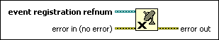

Unregister For Events Function
Owning Palette: Events Functions
Requires: Base Development System
Unregisters all events associated with an event registration refnum.
Event structures that use this event registration refnum no longer receive any dynamic events. National Instruments recommends that you unregister for events when you no longer need to handle them. If you do not unregister for events, LabVIEW continues to generate and queue the events as long as the VI runs, even if no Event structure is waiting to handle them, which consumes memory and can hang the VI if you enable front panel locking for the events.

 Add to the block diagram Add to the block diagram |
 Find on the palette Find on the palette |